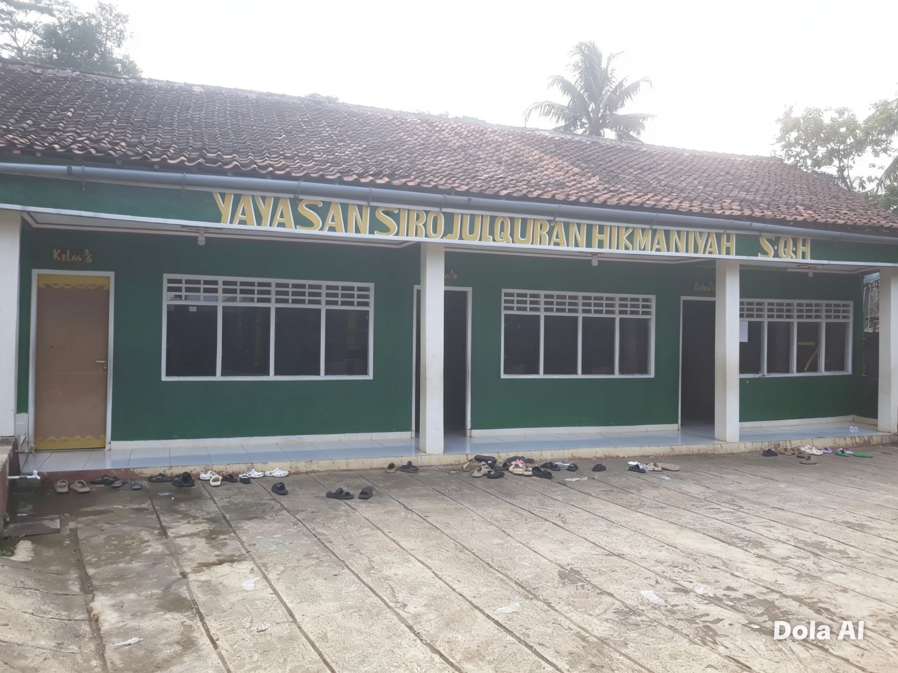
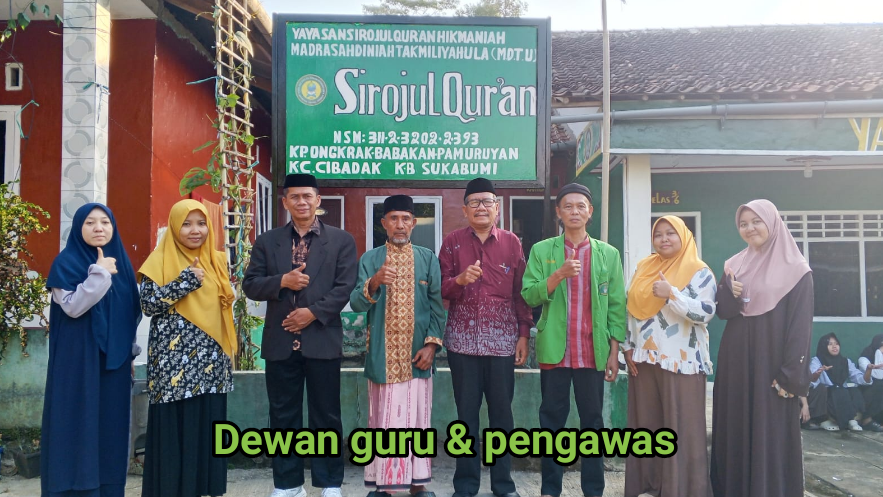
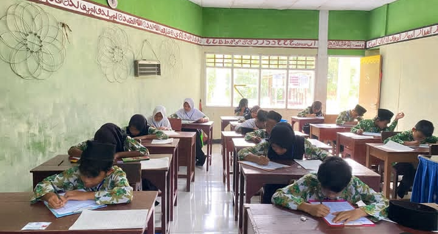

Program Unggulan

MDT
Madrasah Diniyah Takmiliyah
Pendidikan dasar agama Islam untuk anak-anak & remaja
Lembaga Pendidikan Islam | Pamuruyan - Cibadak - Sukabumi
Hubungi Kami
✨ Visi:
"Mewujudkan lembaga pendidikan Islam yang unggul, berkualitas, dan melahirkan generasi muda yang beriman, bertakwa, berakhlak mulia, serta cinta dan mampu mengamalkan Al-Qur'an dalam kehidupan sehari-hari."
🎯 Misi:
1. Menyelenggarakan pendidikan agama Islam yang terstruktur dan berkualitas.
2. Menanamkan nilai iman dan takwa kepada Allah SWT sejak dini.
3. Membimbing santri agar mampu membaca, memahami, dan mengamalkan Al-Qur'an.
4. Membentuk karakter santri yang berakhlak mulia, mandiri, dan disiplin.
5. Mengembangkan kegiatan keagamaan yang bermanfaat bagi masyarakat.
6. Menjalin kerjasama yang baik dengan orang tua dan lingkungan sekitar.
Madrasah Diniyah Takmiliyah
Pendidikan dasar agama Islam untuk anak-anak & remaja



Pamuruyan - Cibadak - Sukabumi
+62 8XX-XXXX-XXXX
info@sirojulquran.or.id